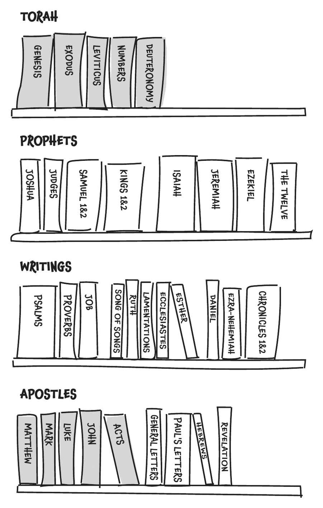
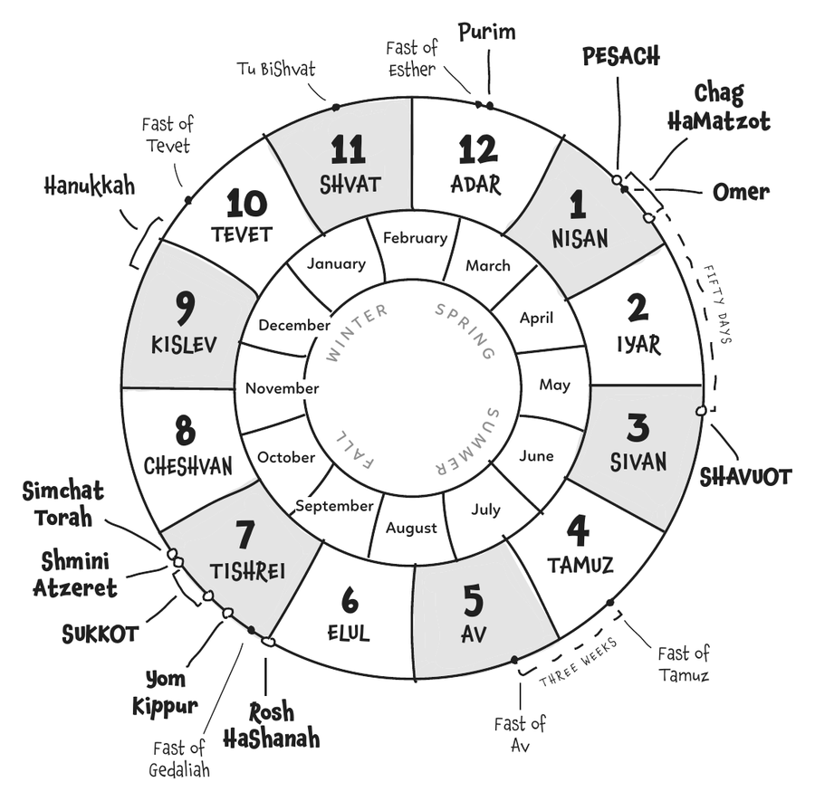
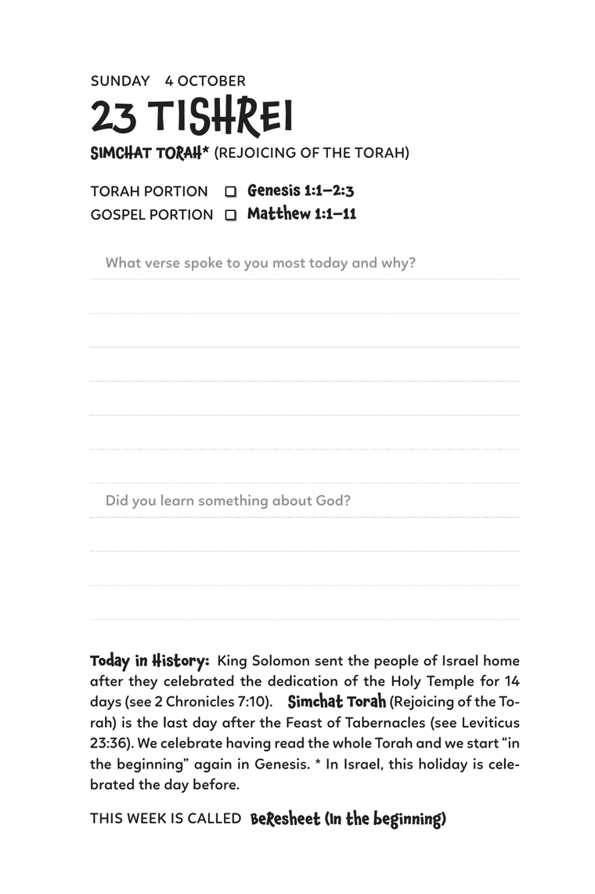

Daily Bread for Kids · A Messianic One-Year Bible Reading Plan for Children
Every day, kids read one portion from the Torah and one from the Gospels: a total of 10 books in one year (including Acts)! Perfect for beginning Bible-readers to systematically study the Word, while also discovering its Jewish context and calendar.
Every day
“Man shall not live on bread alone, but on every word that proceeds out of the mouth of God.”
Young disciples of Yeshua (Jesus) need to learn to study the Scriptures in a disciplined way. The Bible is God’s Word. The whole Bible has also come to us through the Jewish people. It makes good sense to read it from a Jewish point of view. That’s how Messiah and his Apostles grew up. Daily Bread for Kids is a great way to start.
Two readings a day
In one year, Daily Bread for Kids goes through the Torah together with the four Gospels and Acts. Every day, except on Sabbaths and holidays, you read one portion from each.

The weekly Torah portion
The weekly Torah portion is read in every synagogue, all over the world, each Sabbath. In Hebrew, it’s called the Parashah. The Apostles also encouraged disciples from the nations to follow along with these readings (Acts 15:21).
Sunday to FridayThe weekly portion is split into seven shorter sections (aliyot). Each day you read one of them, with a reading from the Gospels.
Sabbath and FestivalsA special reading from the Prophets (the Haftarah) and one from the Apostles. They connect with the story too. Can you find all the ways they connect?
The Bible’s own calendar
While reading the Bible, you follow along with the Bible’s own calendar! Along the way, you will learn more about the biblical Festivals and exciting facts about what has happened in Israel’s history on different days.

For the whole family
Daily Bread for Kids is for beginning Bible-readers, about ages 6 to 12. It is also a great read-aloud plan for parents to do with the whole family, since it is not too long.
We recommend you do your Bible reading early each morning. If you run out of time, you can finish in the evening. If you fall behind, you can catch up on the Sabbath. But a disciplined, daily reading of the Word is best.
Ages 6–12For young disciples learning to read the Bible for themselves.
30–40 verses a dayGenerally, with a few longer and shorter days.
10 books in a yearGenesis to Deuteronomy, Matthew to Acts.
Daily Bread for Kids Online
Help keep it free. No subscriptions, no advertising, no tracking — made possible by those who give.
GiveThe printed journal
Each page has the date and the Hebrew date, the day on the Hebrew calendar, the day’s two readings, simple questions to journal what you learn, and facts about what happened on that day.

We pray this will be the beginning of a lifelong journey for many young disciples, living on Daily Bread from God’s Word. The reading plan covers October 4, 2026 – October 24, 2027 (Simchat Torah 5787 through Simchat Torah 5788).